RectTransform 剖析
一、基本要点
RectTransform继承于Transform，在 Transform 基础上，RectTransform 增加了 轴心（pivot）、锚点（anchors）、和 尺寸变化量（sizeDelta）。
其中anchors和pivot都是坐标原点在左下角的0-1向量空间，0-1代表的是比例。anchors的向量空间是子UI相对父UI的比例位置，pivot的向量空间是相对UI本身的比例位置。
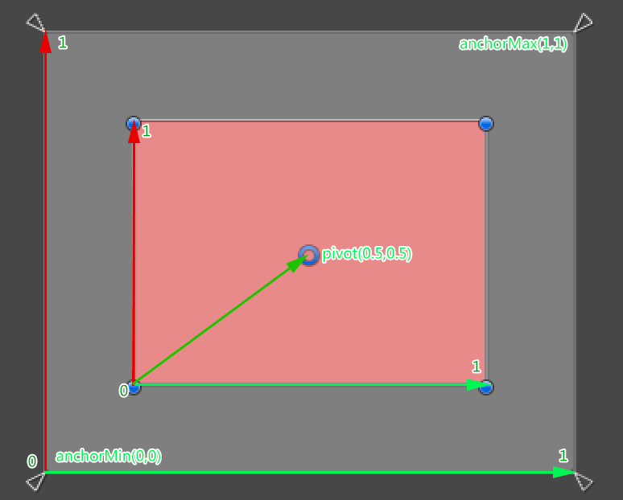
二、Anchors（锚点或锚框）
锚点功能的引入，使UI相对布局和绝对布局，自适应，等比缩放等完美融合一起。在uGUI中Anchors并不一定是锚点，也可能是一个矩形。当Anchors汇聚成一个点时，我们通常称之为锚点；当Anchors是一个矩形状时，我们通常称之为锚框。Anchors是子UI在父UI中的映射位置，但并不代表子UI的实际大小，子UI的实际大小，还会通过这些属性(width,height,posX,posY,left,top,right,bottom)相对Anchors进行调整。
基本概念：
• Pos (X, Y, Z) ，矩形轴心点（pivot）与锚点（anchors）之间的距离。
• Left, Top, Right, Bottom，矩形的四条边与锚框（anchors）之间的间距。
（一）Anchors是一个点时
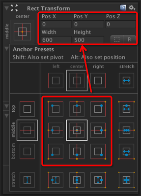
• 在数值上表示为：achorMin.x==achorMax.x && achorMin.y==achorMax.y
• Width/Height可以设置，不受Anchors影响。
• PosX/PosY可以设置。设置此值后，矩形轴心点与锚点之间的距离就恒定了，不管如何改变父UI的尺寸。
• 子UI不会随父UI进行拉伸，位置和大小是固定的。
（二）Anchors是一条线时
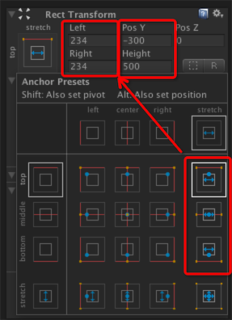
• 一条横线：achorMin.y==achorMax.y，如上图。子UI宽度会随父UI进行拉伸，高度和Y方向的距离是固定的。此时，Left,Right,PosY,Height可以设置。
• 一条竖线：achorMin.x==achorMax.x。子UI高度会随父UI进行拉伸，宽度和X方向的距离是固定的。此时，Top,Bottom,PosX,Width可以设置。
（三）Anchors是一个矩形时
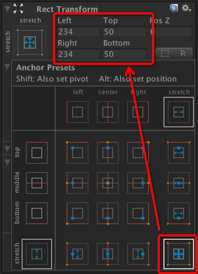
• achorMin.x!=achorMax.x && achorMin.y!=achorMax.y
• 子UI宽高都是拉伸状态。
• 宽高不可以设置。
• Left, Top, Right, Bottom可设置，矩形的四条边与锚框的边间距是固定的。
三、anchoredPosition
anchoredPosition官方描述为：The position of the pivot of this RectTransform relative to the anchor reference point.
即：RectTransform的pivot与锚点（anchor reference point）的向量。
（一）Anchros汇聚一个点时
Anchros汇聚一个点时，锚点（anchor reference point）比较好理解，就是Anchros汇聚的这个点。
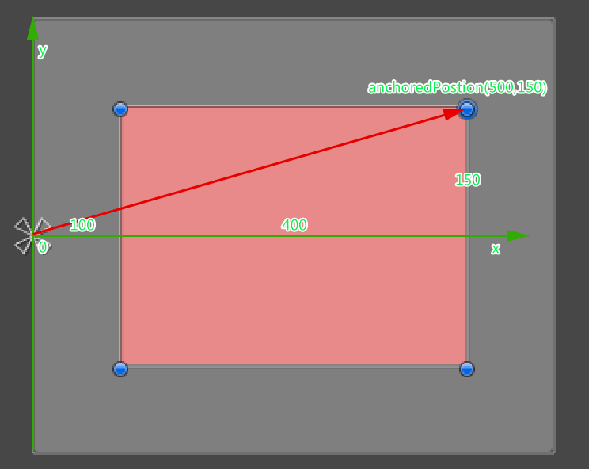
（二）Anchros是一个矩形时
Anchros是一个矩形时，锚点（anchor reference point）的位置就稍显复杂，此时锚点（anchor reference point）的位置是根据pivot计算出来的线性插值。
----在此插入线性插值相关知识，复习一下基础知识。----
线性插值法是指使用连接两个已知量的直线来确定在这两个已知量之间的一个未知量的值的方法。
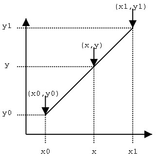
假设我们已知坐标(x0,y0)与(x1,y1),要得到[x0,x1]区间内某一位置x在直线上的值。根据图中所示，我们得到:
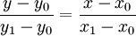
• y = (1 − α)y0 + αy1 或者 y = y0 + α(y1 − y0)
• x = (1 − α)x0 + αx1 或者 x = x0 + α(x1 − x0)
这样就可以通过α就可以直接得到 x,y。
通过线性插值的方法计算锚点
α即为pivot(0-1)的比例系数！通过下图实例，看一下计算过程。
• 已知pivot(0,0.5)，pivot所在坐标值为(100,250)
• 已知左下角锚点坐标(x0,y0)=(0,0)
• 已知右上角锚点坐标(x1,y1)=(600,500)
以上值，通过Rect的Width,Height及Rect与锚的间距，以锚左下角为原点的坐标系获得。
• anchorReferencePointX = (1 − 0)x0 + 0x600 = 0;
• anchorReferencePointY = (1 − 0.5)x0 + 0.5x500 = 250;
得到：anchorReferencePoint ＝ (0,250)
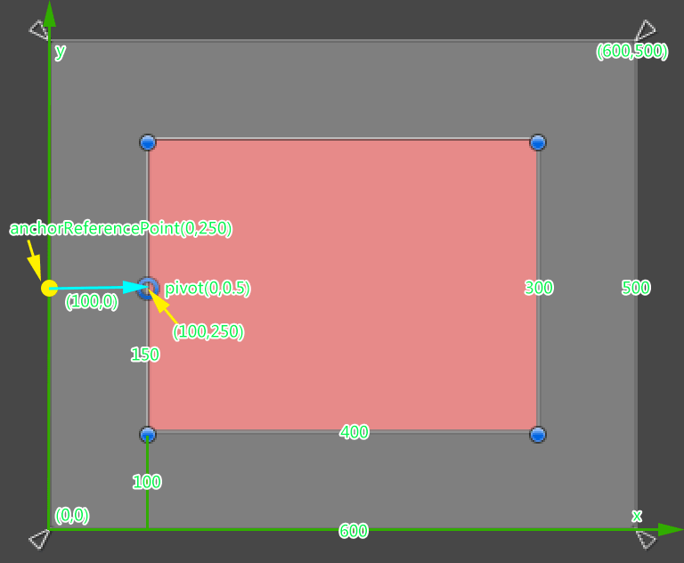
图中黄点即为计算出来的anchorReferencePoint，anchorReferencePoint到pivot之间的向量，即为anchoredPosition！
anchoredPosition＝pivot(100,250)-anchorReferencePoint(0,250)=(100,0)；
四、offsetMin与offsetMax
• offsetMax为当前矩形右上角相对于锚点右上角的偏移。
• offsetMin为当前矩形左下角相对于锚点左下角的偏移。
1、Anchors汇聚一个点时
offsetMax/offsetMin的计算如下图：
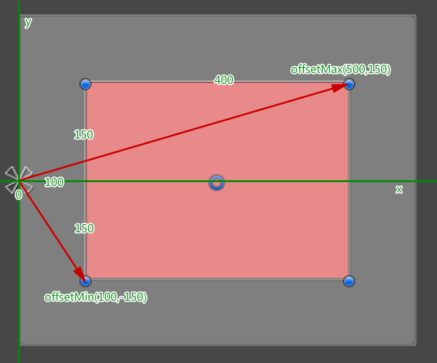
Anchors汇聚一个点时，即以锚点为坐标原点（0,0），offsetMax和offsetMin就可以直接用坐标系的方式，快速得出右上角和左下角在此坐标系中的（x,y）。
2､Anchors是一个矩形时
offsetMax/offsetMin的计算如下图：
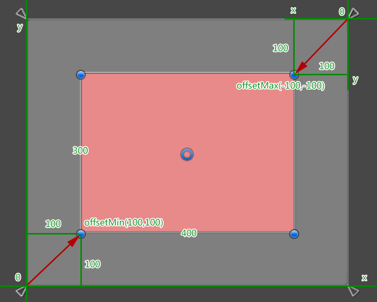
Anchors是一个矩形，则需要以左下角锚点和右上角锚点分别作为坐标原点画两个坐标系，以计算offsetMin和offsetMax.
五、sizeDelta
官方文档只用了一句英文进行了描述：The size of this RectTransform relative to the distances between the anchors.
是不是很费解？官方文档很多类似这种，描述不详细，造成理解上的困难和学习成本增加。
sizeDelta是锚点定义的子矩形与锚点区域大小偏移量，也可以称之为尺寸变化量。
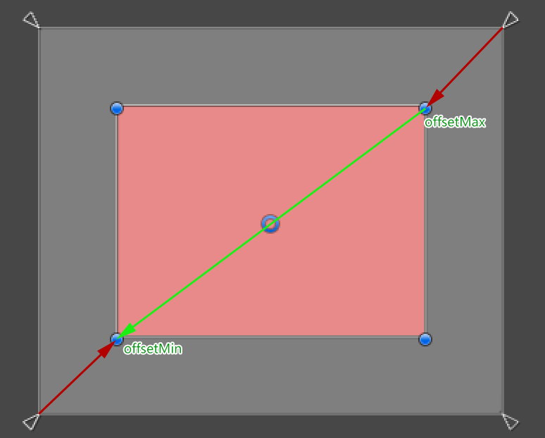
如上图所示，红色区域为锚点定义的子矩形，矩形相对锚点的偏移就可以通过右上角与锚点右上角的offsetMax到左下角与锚点左下角的offsetMin之间的向量（绿色箭头）来表示。
因此得出计算方法：
sizeDelta = offsetMax-offsetMin
（一）如何动态RectTransform的大小
1、Anchors汇聚一个点时
sizeDelta（x,y）与Rect的宽高是一致的。RectTransform与锚点偏移量就是本身的大小。
RectTransform的Rect是只读的，当需要动态设置RectTransform的尺寸时，在Anchors汇聚一个点时，就可以直接通过sizeDelta的x,y来动态设置RectTransform的对应的宽和高。
2、Anchors是一个矩形时
sizeDelta同样可以设置Rect大小，但理解上不太好转换。可以直接通过offsetMax和offsetMin的偏移量来动态调整Rect的大小。具体实例，后续会添加本知识点的实例。
（二）sizeDelta的计算实例
如下图，红色区域的Anchors是一个anchorMin(0,0)到anchorMax(1,1)的全拉伸锚框，left,right,top,bottom全为50。
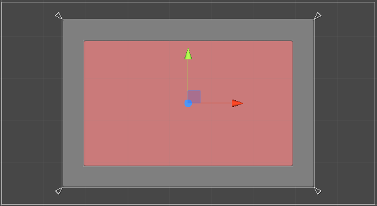
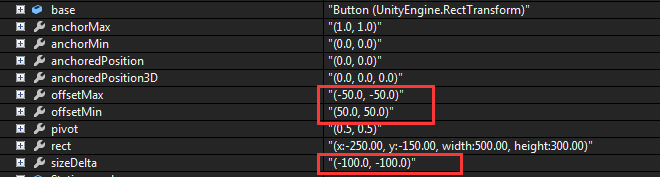
红线内数据，sizeDelta = offsetMax-offsetMin得到的向量。 即：sizeDelta ＝ (-50-50,-50-50) = (-100,-100)
🔚